한가위 연휴의 끝과 함께, CloudNet@에서 진행하고 있는 CI/CD Study에 참여하게 되었습니다.
이번에는 핸즈온용으로 즐겨쓰는 GitHub CodeSpace와 연관된,
Visual Studio 상에서의 Dev Containers 활용에 대해 다뤄보고자 합니다.
사용 OS환경은 Ubuntu Desktop 24.04 LTS 이며,
아래의 문서에서 안내된대로 차근차근 따라해보며 좀 더 이해를 해보고자 합니다.
0. Docker 설치
내용이 길어, 아래의 포스트로 나누었습니다.
- Ubuntu Docker 설치
- 작성 기준, Dev Container는 Ubuntu Snap 패키지(snapcraft)로 설치된 Docker에는 지원되지 않는다고 합니다.
- 사용자(
$USER)를docker그룹에 추가하여야합니다.
(위 게시물의3. 권한 상승 설정 (선택)참고)
1. Dev Containers 확장 프로그램
Visual Studio Code(이하, VSCode)에서 제공되는, Dev Containers 확장 프로그램을 사용하면, 개발 환경에 필요한 모든 기능이 갖춰진 Container를 구축하여 환경을 구성할 수 있습니다.
컨테이너 내부 혹은 컨테이너에 마운트된 폴더를 통해 접근하여, VSCode IDE의 모든 기능을 사용할 수 있습니다.
핵심은 devcontainer.json 파일이며, 프로젝트 단위에서 개발용 컨테이너의 구성 및 접근 방법이 명세되어 있습니다.
이를 통해, 앱을 구동하거나 코드 개발에 필요한 도구, 라이브러리, 혹은 런타임을 사전에 정의할 수 있습니다.
- 컨테이너 내에서 구동될 파일들: 로컬 환경의 파일이 마운트되거나, 컨테이너 내부로 복사됩니다.
- VSCode의 확장 프로그램들: 컨테이너 내부에 설치되며, 내부의 플랫폼 및 파일시스템에 대한 모든 권한을 가집니다.
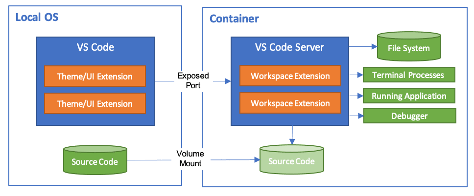
이를 통해,
- 개발환경을 쉽게 전환할 수 있습니다.
- 다양한 로컬 환경과 관계없이, 개발 환경을 일관성있게 유지할 수 있습니다.
Dev Containers 확장 프로그램은 두 가지 기본 모델을 지원합니다.
- 컨테이너를 풀타임 개발환경으로 사용하거나,
- 실행 중인 컨테이너에 연결하여 사용할 수 있습니다.
2. 시작 전 설정
- 로컬 환경:
- Docker 및 VSCode가 설치되어야 합니다.
(VSCode와 같은 경우, 기존 게시물이 도움 될 수 있습니다.) - Dev Container 확장프로그램을 설치합니다.
- Docker 및 VSCode가 설치되어야 합니다.
- Git을 사용한다면: 이를 위한 로컬의 SSH Key를 공유하도록 설정할 수 있습니다.
Dev Container 확장프로그램 설치
VSCode 내 Extenstion 메뉴를 열고 Dev Contatiners를 검색, 설치 합니다.
(Microsoft를 확인합니다)
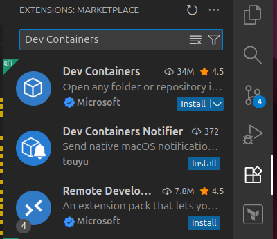

Git 사용을 위한, Host SSH 키 사용 설정
아래 문서의 내용에 따라, Dev Containers에서 Host의 SSH 키를 사용할 수 있도록
ssh-agent를 설정합니다.
SSH키에 암호가 있을 경우, git 동기화에 이슈가 발생할 수 있습니다. 이는,git push명령어를 통해 우회하거나, 암호가 없는 SSH키를 사용하여야합니다.
Sharing Git credentials with your container
(1) .gitconfig 파일에 대해서
Dev Containers 확장 프로그램은 Host의 .gitconfig파일을 컨테이너에 자동으로 복사합니다.
이 파일은 아래처럼 git config –global 을 통해 지정한 전역 설정값을 담고 있습니다.
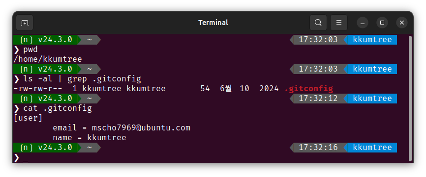
(2) ssh-agent 실행 설정
MacOS와는 달리, Linux환경에서는 자동으로 실행하도록 섧정되어 있지 않으므로 오류를 방지하기 위해 설정합니다.
- SSH Agent가 백그라운드에서 구동되도록 설정합니다.
eval "$(ssh-agent -s)"
- Shell 프로파일에 아래의 내용을 추가하여, 자동 실행될 수 있도록합니다. (위의 명령어가 실행된 상태여야 합니다.)
- (bash)
~/.bash_profile/ (zsh)~/.profile - 사용자 지정 기본 쉘 확인:
echo $SHELL - 현재 사용 중인 쉘 확인:
echo $0
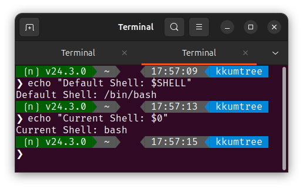
- (bash)
# 적용 전, SSH AUTH소켓이 지정되었는 지 확인합니다.
echo "$SSH_AUTH_SOCK"
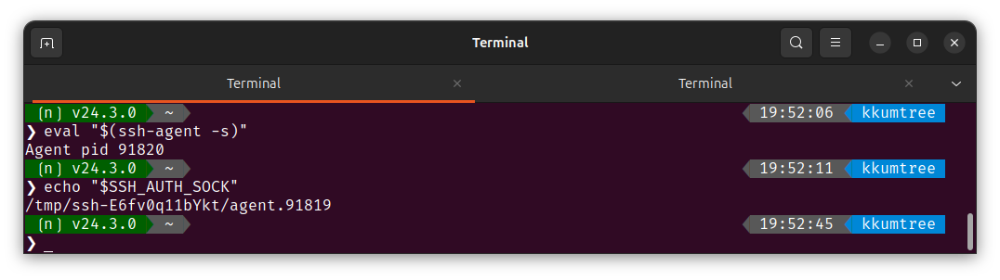
# TTMP=$(basename "$0"); if [ "$TTMP" = "bash" ]; then ls -l ~/.bash_profile ; elif [ "$TTMP" = "zsh" ]; then ls -l ~/.zprofile; else echo "현재 쉘: $TTMP은 bash 혹은 zsh이 아닙니다."; fi;unset TTMP
if [ -z "$SSH_AUTH_SOCK" ]; then
# Check for a currently running instance of the agent
RUNNING_AGENT="`ps -ax | grep 'ssh-agent -s' | grep -v grep | wc -l | tr -d '[:space:]'`"
if [ "$RUNNING_AGENT" = "0" ]; then
# Launch a new instance of the agent
ssh-agent -s &> $HOME/.ssh/ssh-agent
fi
eval `cat $HOME/.ssh/ssh-agent` > /dev/null
ssh-add 2> /dev/null
fi
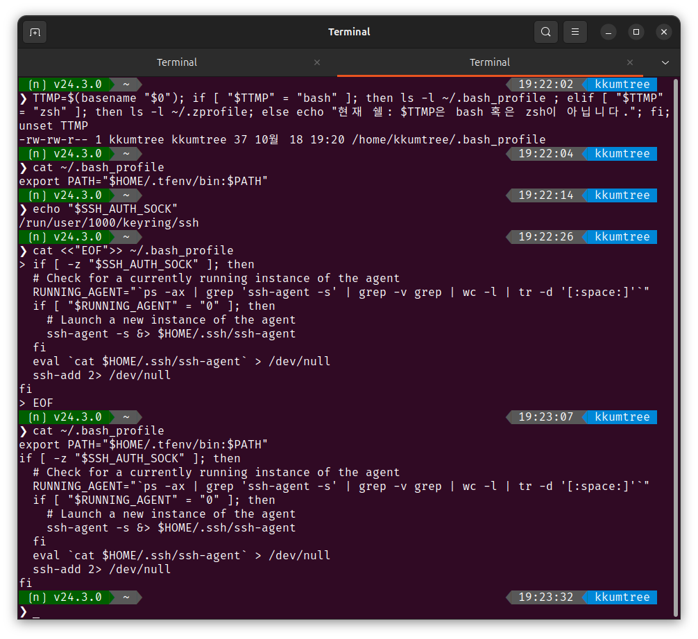
- 이후, 마지막 줄을 설정할 지정한 SSH key로 바꿉니다.
# $HOME/.ssh/id_ed25519 키를 사용할 경우
# # 확인
# sed 's#ssh-add 2> /dev/null#ssh-add $HOME/.ssh/id_ed25519 2> /dev/null#' ~/.bash_profile | tail -n 4
# 적용
sed -i 's#ssh-add 2> /dev/null#ssh-add $HOME/.ssh/id_ed25519 2> /dev/null#' ~/.bash_profile
# 적용 확인
tail -n 4 ~/.bash_profile
# ps -ax | grep 'ssh-agent -s' | grep -v grep | wc -l | tr -d '[:space:]'
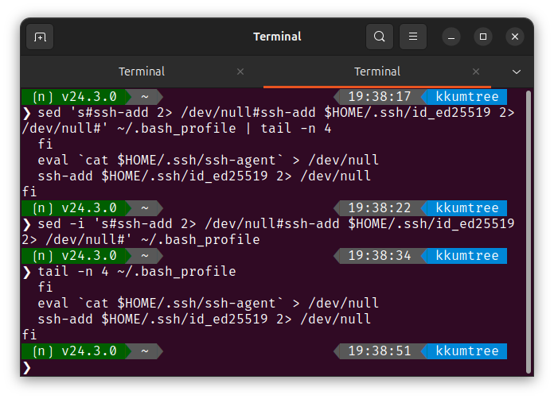
3. Quick Start
3가지로 구성되어 있습니다.
- 개발용 컨테이너 사용해보기
- 컨테이너에서 기존 폴더 열어보기
- 격리된 컨테이너 볼륨에서 Git 저장소 또는 GitHub PR 열어보기
(1) 개발용 컨테이너 사용해보기
가장 쉬운 방법으로, 개발용 컨테이너 샘플 중 하나를 사용해봅니다.
-
docker --version명령어로 docker 설치여부 확인
상단 검색바를 선택 후,>Try a Dev를 입력하여Dev Containers: Try a Dev Container Sample...을 선택합니다.
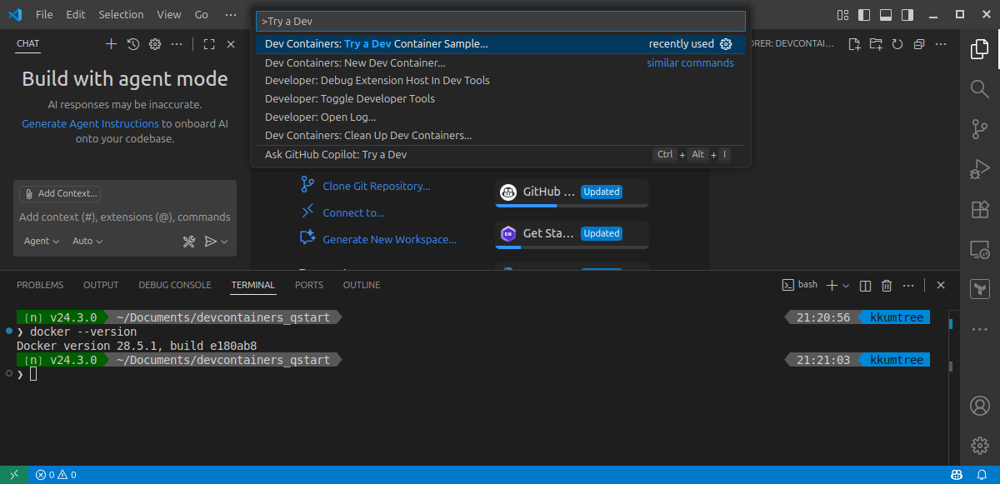 -
Node를 선택합니다.
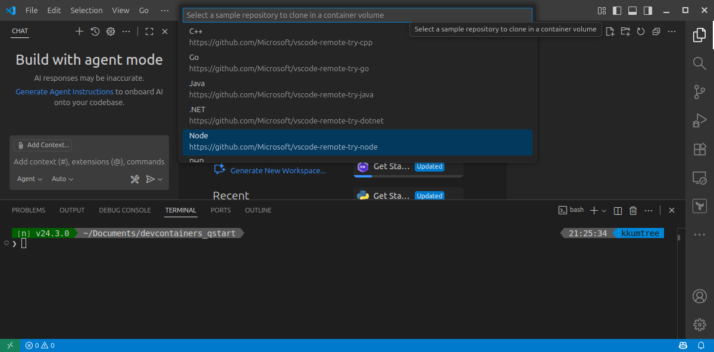 -
선택하면 아래와 같이 표시되며, 빌드가 완료될 때까지 대기 합니다.
- 우측 하단:
Connecting Dev Container (show log) - 좌측 하단:
Dev Container: <컨테이너명> - 우측 하단의 메시지를 클릭하면 아래처럼 Docker 작업 현황을 볼 수 있습니다.
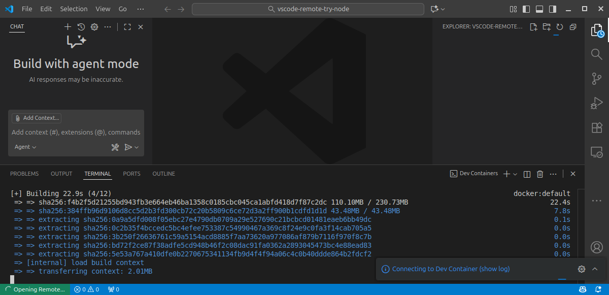
- 우측 하단:
-
TERMINAL탭에서+를 클릭하여New Terminal또는New Terminal Window를 선택합니다.
이번에는New Terminal Window를 선택하여, 새 창에 터미널을 띄워보겠습니다.
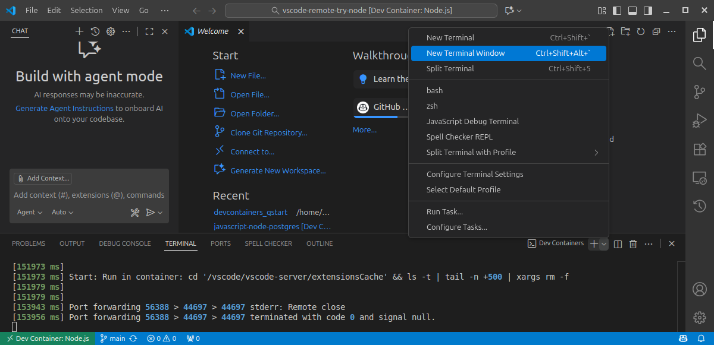 -
Node 버전을 확인해보겠습니다.
# node --version; npn --version node -v; npm -v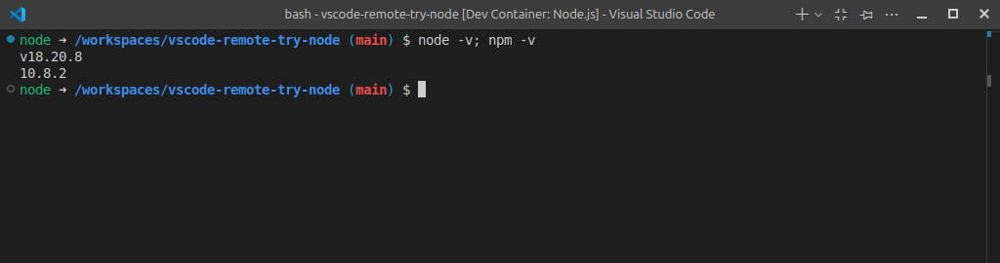
-
VSCode에서
F5키를 눌러 애플리케이션을 실행해보겠습니다.DEBUG CONSOLE탭: 3000포트에서 샘플 어플리케이션이 구동되고 있음PORT탭: Forwarded port, 로컬 포트 3000번이 열림
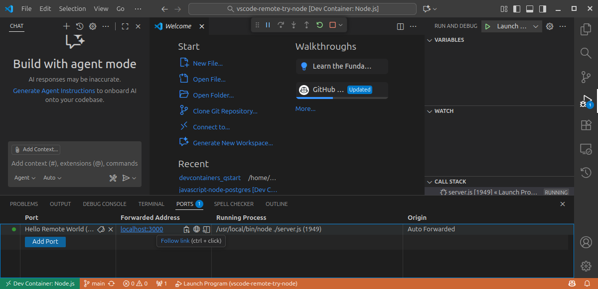
-
브라우저에서
http://localhost:3000으로 이동하면, 간단환 Node.js 서버가 실행되고 있음을 확인할 수 있습니다.
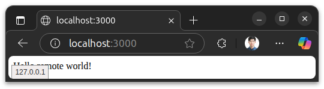 -
File > Close Remote Connection을 클릭하여, 원격 세션을 종료합니다.
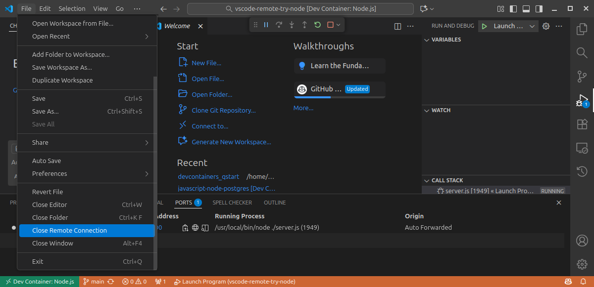
Dev Containers 확장 프로그램의 작동 원리
- 확장 프로그램은
.devcontainer폴더에서 아래의 파일을 기반으로 Dev Container를 생성합니다.devcontainer.json- (옵션)
Dockerfile,docker-compose.yml
devcontainer.jsonGitHub: microsot/vscode-remote-try-node
- “image"에 정의된 이미지를 사용하여, 이미지를 빌드합니다.
- “customizations"에 정의된
streetsidesoftware.code-spell-checker확장 프로그램을 설치합니다. - “portsAttributes"에 지정된
3000포트를 노출합니다. - “portsAttributes"에 지정된
yarn install로 yarn 패키지를 설치합니다.
(2) 컨테이너에서 기존 폴더 열어보기
그러면 Host의 기존 소스 코드를 사용해서, 기존 소스 코드의 언어를 위한 Dev Container를 설정해보겠습니다.
기존의 Go 언어 소스코드가 있기에, Go언어에 대해 완비된 개발 환경을 설정해보겠습니다.
-
F1로 명령 팔레트를 호출하여(상위 검색 바를 클릭 후,>를 입력하는 것과 같은 효과),Dev Containers: Open Folder in Container...를 실행합니다.
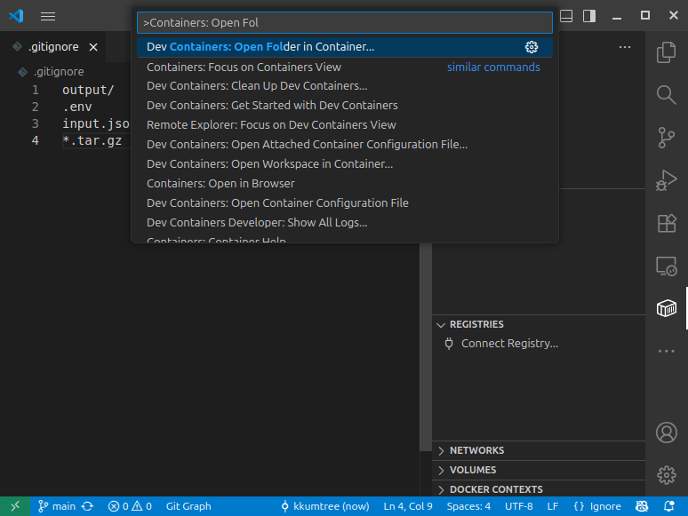 -
이후, 대상 프로젝트 폴더를 선택한 후,
Open을 클릭합니다.
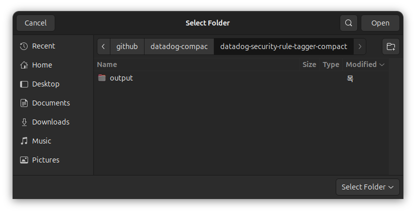 -
이번에는
Add configuration to user data folder를 선택하여, 로컬에 설정을 저장합니다. 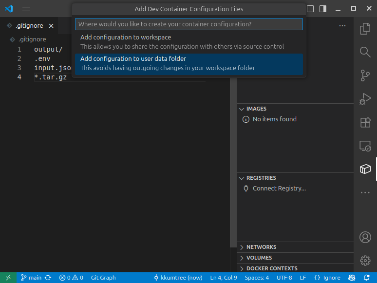- 로컬 설정값의 경로:
$HOME/.config/Code/User/globalStorage/ms-vscode-remote.remote-containers/configs
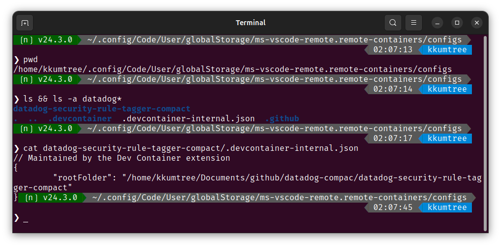
- 로컬 설정값의 경로:
-
이후, 추천받은 Go 컨테이너를 선택해봅니다.
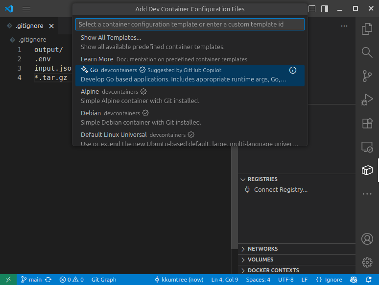 -
기존 소스코드가 go1.22 버전 기반이었기에,
1.22-bookworm을 선택해봅니다.
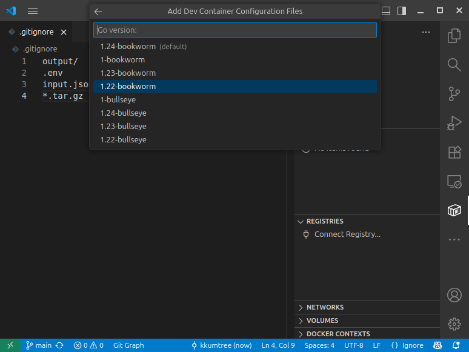 -
(선택) 그외에 다양한 부가 기능을 선택하여 미리 추가할 수 있습니다. 이번에는 생략합니다.
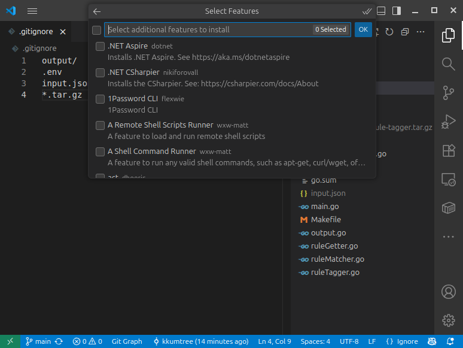 -
(선택) dependabot.yml 생성. 무해하기에 선택해서 생성해보았습니다.
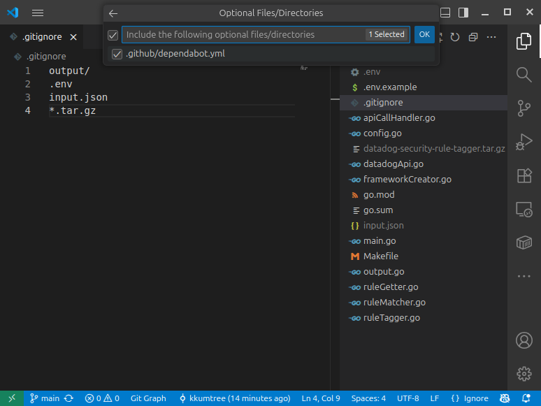 -
그러면 Dev Container 구성을 시작합니다.
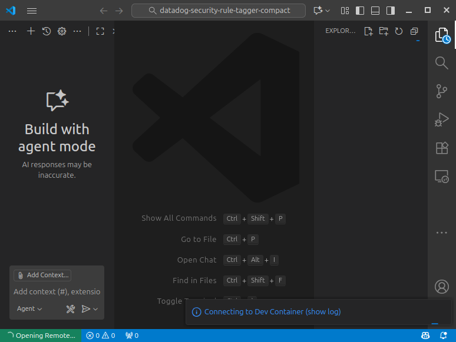 -
Go 1.22가 미리 구성된 Dev Container 환경 내에서 VSCode로 코드를 편집, 테스트할 수 있습니다.
또한, 컨테이너 환경에서 소스코드 수정을 하면, Host에서도 변경된 소스코드를 확인할 수 있습니다.
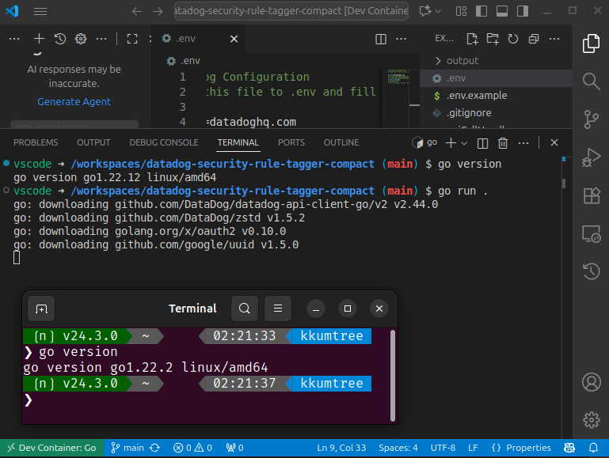
(3) 격리된 컨테이너 볼륨에서 Git 레포지토 또는 GitHub PR 열기
PR 검토를 위한, Git 레포지토리 격리된 복사본을 사용하거나 작업에 영향을 주지 않고 다른 브랜치를 조사하려는 경우

kkumtree
Source code on GitHub
© 2025 kkumtree and contributors All rights reserved.
Licensed under
CC BY-NC-ND 4.0